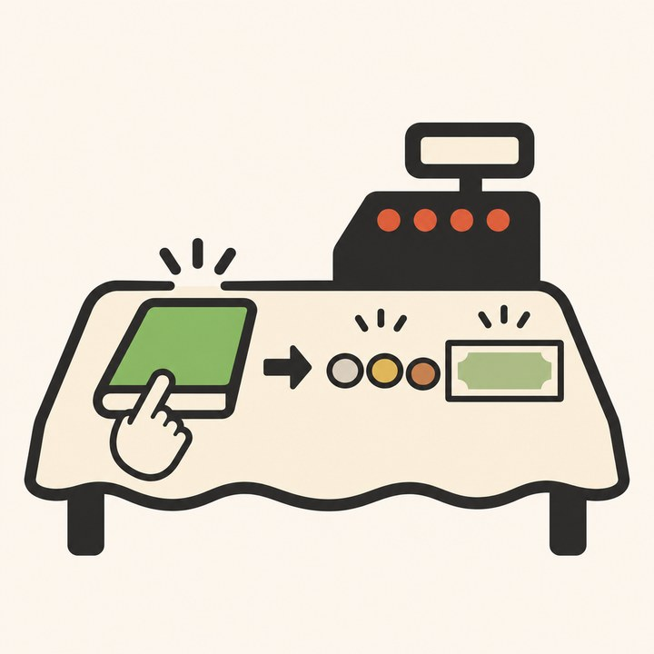

iPhone・iPad・Android のスペースのレジ
押して、お釣りまで。
在庫がどこに何部あるかも。
同人誌の即売会・フリマ・ハンドメイドのイベントで、頒布物を押して会計し、お釣りの金種を出します。在庫は自宅・会場・委託先のどこに何部あるかを数え、見本誌と交換も分けます。電波の無い会場でも、端末の中で全部動きます。
App Store・Google Play で配信予定クレジットや QR の決済、消費税の計算、領収書・レシートの印刷はしません。買い切りで全部の機能が使え、品数の制限もありません。アプリ内課金・サブスクリプション・広告はありません。

こんな困りごとのために
イベントの途中でデータが消えた
サーバーを使わず、端末の中で動きます。iCloud Drive の書類と毎日の控え・ゴミ箱も。
取り消しても在庫が戻らない
会計を取り消すと、在庫が元に戻ります（セットも中の品に）。直した記録も残ります。
商品の枠が足りない
頒布物とセットの数に制限はありません。同じレジに混ぜて並べられます。
現金かキャッシュレスか
支払いの種類を分けて記録。締めなくても、いつでも履歴を見られます。
閉店のとき現金が合わない
開店と閉店の金種を数えて、あるはずの現金との差を出します。
この本は黒字だった？
印刷費と経費から、1冊あたりの原価・黒字か赤字か・何冊で取り戻せるか。
できること
| 会計 | 頒布物とセットのボタン・お釣りと金種・支払いの種類・取り消しと直し |
|---|---|
| 在庫 | 自宅・会場・委託先・見本誌・交換・セットで中の品が減る |
| 集計 | イベントごと・月ごとの売上・頒布物ごとの数・釣り銭の箱の差・作品の収支・CSV と PDF |
| データ | iCloud Drive の書類・毎日の控え・アカウントなし・解析と広告なし |
使い方・プライバシーポリシー・利用規約もご覧ください。